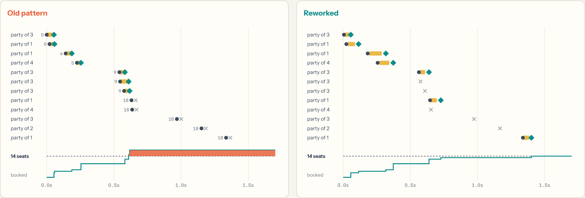
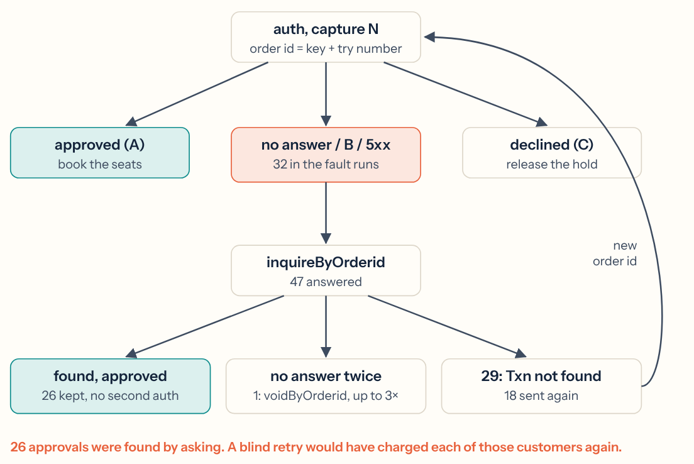
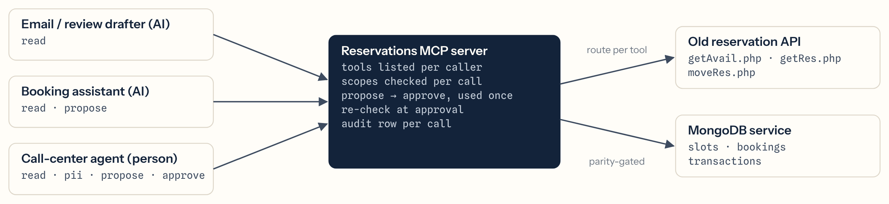

Two checkout flows ran the same booking rush on MongoDB (replica set, real transactions) against a CardPointe-shaped test gateway that loses answers, times out and returns 5xx. Counts come from the database and the gateway's own ledger: . The old pattern is a common one, written by me to compare against; I haven't seen your code.

booked + held + party ≤ capacity, recorded per key so retries are no-ops.B or 5xx → inquireByOrderid first; 29 means send again; still no answer → voidByOrderid ×3.

bodySHA256) tooBehind a TLS-terminating load balancer the app sees but Twilio signed : the naive check rejects a genuine callback. The public URL is rebuilt from X-Forwarded-* only when the request comes from the load balancer.